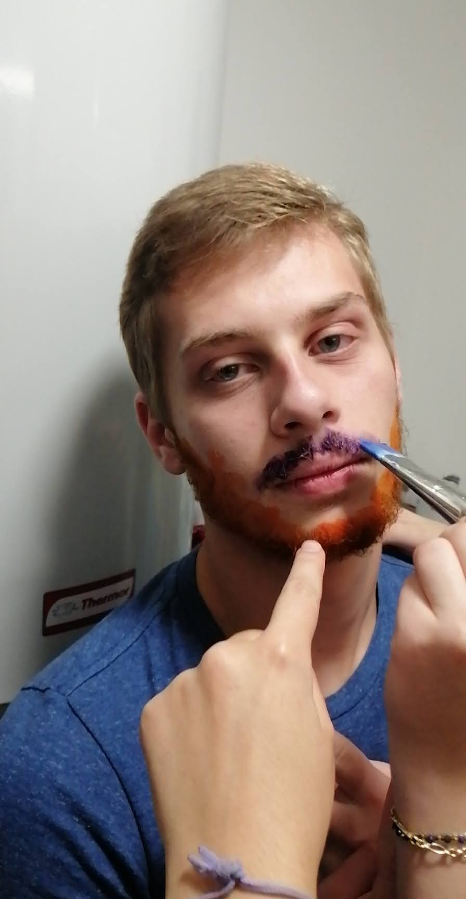

LE SUSPECTColmar, 22 janvier 2026. L'aube se lève sur l'Alsace avec la gravité d'un événement historique. Car en ce matin-là, un homme franchit le seuil du quart de siècle. La mine décontractée, le permis de conduire à court de points, et l'avenir devant lui. Une belle âme a gagné une année.
La rédaction, elle, a préparé une enquête pour couvrir cette événement historique.
Tu sais ce qu'il te reste à faire.
Es-tu prêt à humilier un homme en son jour d'anniversaire ?
COMMENCER L'ENQUÊTE →* Aucun Bastien n'a été blessé lors de la création de ce jeu. Moralement si.